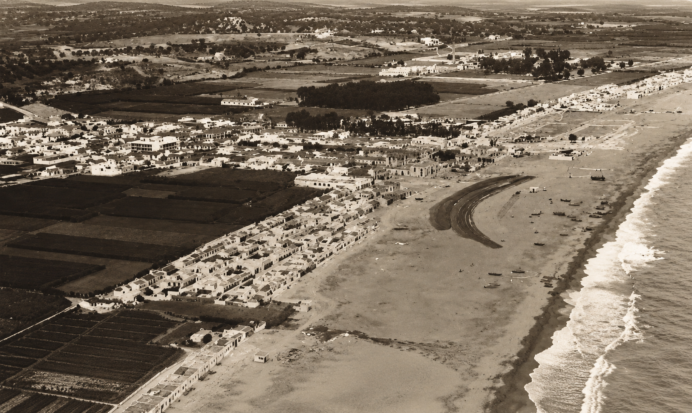

Historia
Los orígenes de Torre del Mar se remontan a las épocas fenicia, griega y romana (cuando se llamaba Maenoba), destacando desde antiguo por su actividad comercial. Durante la Edad Media y el siglo XV, adoptó un papel estratégico de vigilancia aduanera y defensa contra la piratería berberisca en torno a su castillo. Además, sus costas fueron escenario en 1704 de la Batalla Naval de Vélez-Málaga, combate en el que el célebre Blas de Lezo perdió una pierna.
En el siglo XIX, el núcleo urbano se consolidó en cuatro barrios y, tras un breve periodo de independencia municipal, volvió a depender de Vélez-Málaga. En esta época, la economía se vio fuertemente impulsada por la industria azucarera de la familia Larios.
Finalmente, la llegada del ferrocarril y las carreteras a principios del siglo XX propició la creación de los primeros balnearios. Sin embargo, fue en la década de 1960 cuando la localidad experimentó su definitivo auge urbanístico, transformando su fisonomía con las grandes avenidas, edificios y el paseo marítimo que definen su actual perfil turístico. Este desarrollo moderno ha convertido al núcleo en un referente de ocio y cultura en la comarca de la Axarquía, atrayendo tanto a visitantes nacionales como internacionales. Su rica oferta gastronómica, ligada estrechamente a la tradición marinera de sus antiguos barrios pesqueros, sigue siendo uno de sus mayores reclamos. Así, la localidad combina hoy el dinamismo de una ciudad costera con la hospitalidad y el carácter acogedor de sus gentes. Un destino que progresa hacia el futuro sin olvidar el valioso legado histórico que fraguó su identidad a orillas del Mediterráneo.
